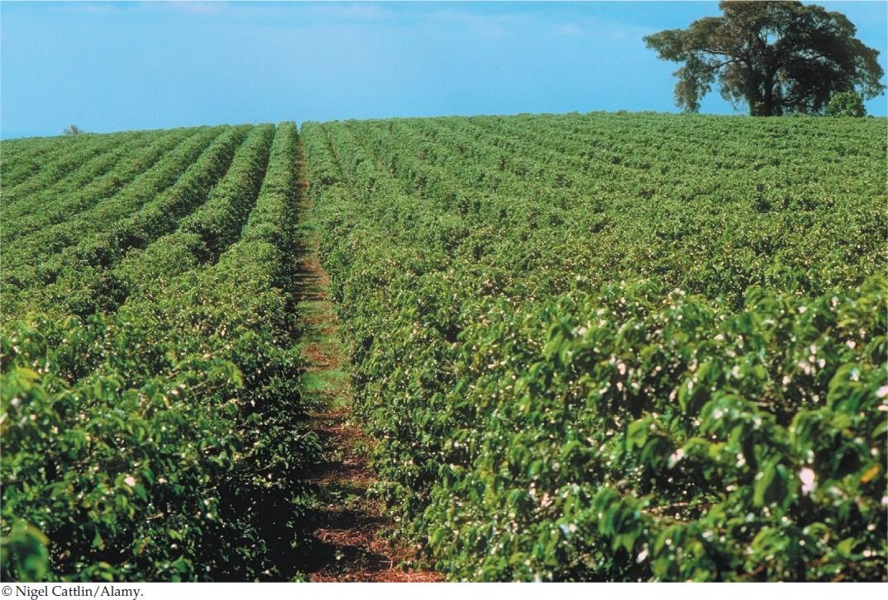

| 44 | Ecological Communities |
|
KEY CONCEPTS
44.1Communities Contain Species That Colonize and Persist 44.2Communities Change over Space and Time 44.3Community Structure Affects Community Function 44.4Diversity Patterns Provide Clues to What Determines Diversity 44.5Community Ecology Suggests Strategies for Conserving Community Function |

This coffee plantation uses high-intensity sun cultivation techniques that increase crop yield at the expense of species diversity.
|
As we sip our morning cup of coffee, we can send silent thanks to Coffea arabica, the plant that yields 70 percent of our coffee beans. This understory shrub or small tree of tropical forests originated in the Ethiopian highlands as a natural hybrid between C. canephora (“robusta” coffee, from which we get the other 30 percent) and C. eugenioides, both of which hail from western and central Africa.
Coffea arabica has probably been cultivated in Ethiopia for 1,500 years, although the earliest written description of the plant dates to a tenth-century set of physician’s notes. Molecular genetic evidence indicates that its cultivation spread to Yemen about 575 CE. Coffee was widely traded within the Muslim world, in spite of controversy there about the use of stimulants (see the opening story of Chapter 5), and the first coffeehouses were in Arabia. Arabs tried to corner the coffee market by banning exports of plants and fertile seeds, but the Dutch managed to smuggle some live plants out of Yemen. The beverage reached Italy in the 1600s and later spread through Europe.
By the 1700s, coffee cultivation had reached Southeast Asia and the Americas. Coffee is now one of the most valuable export commodities of the developing world, second only to oil. As demand has grown, worldwide coffee production has risen from about 5 million metric tons per year in the 1970s to about 7 million metric tons today, and coffee production employs some 25 million people in developing countries.
Coffee is grown mainly in tropical regions, using a variety of cultivation methods. The least intensive, traditional method is to plant coffee in the shade of undisturbed forests. This practice embeds coffee in natural forest communities, conserving most of their original plant and animal species. Medium-intensity shade cultivation replaces the forest with a low-diversity plantation of trees, under which the coffee is grown. High-intensity sun cultivation uses no shade trees; modern genetic cultivars are planted at high densities, heavily pruned, and subsidized with fertilizer, herbicides, and pesticides. Thus the more intensive methods increasingly replace natural communities with human-constructed communities that contain far fewer species. High-intensity methods increase coffee yields, but they sacrifice the greater biological diversity that traditional methods maintain, cause greater pollution, and require costly labor and chemicals.
Can we use principles of community ecology to improve methods of coffee cultivation?